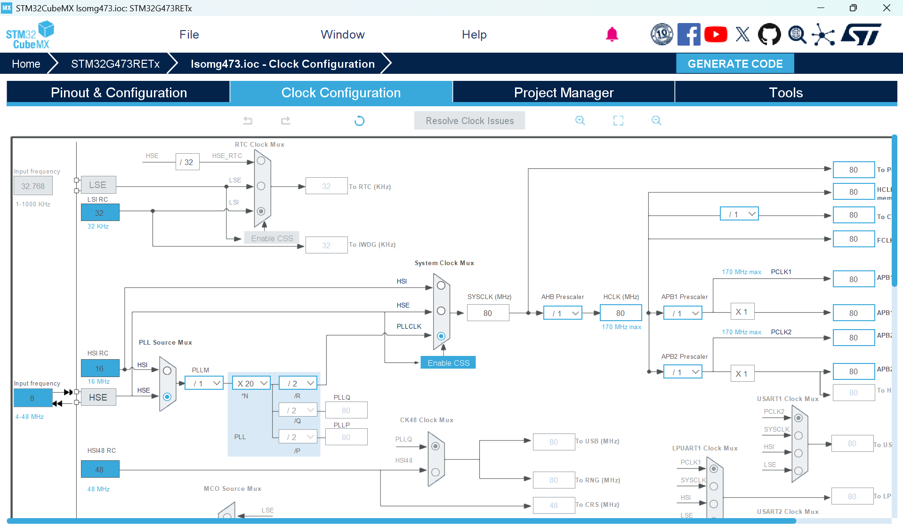
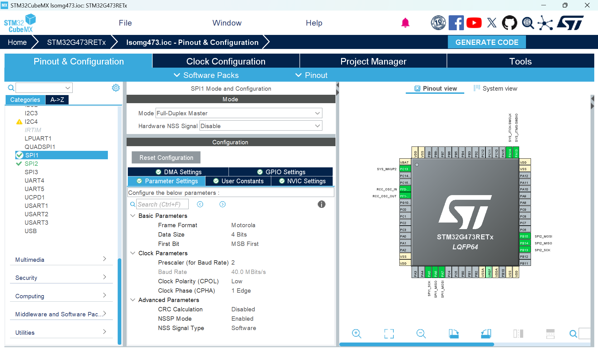

SD Card Driver Documentation
Overview
This driver provides a thread-safe, robust interface to interact with an SD Card using interrupt-driven SPI and FreeRTOS synchronization primitives. By integrating with FatFs, the driver enables full file system capabilities via a background worker task, ensuring that user threads are not blocked by sd card writes and reads.
Minimal Working Example
[!WARNING] This driver relies on the FreeRTOS scheduler. Do not call these functions before
vTaskStartScheduler()as it will result in a mutex deadlock or system crash.
#include "stm32xx_hal.h"
#include "sdcard.h"
#include <string.h>
// FreeRTOS includes
#include "FreeRTOS.h"
#include "task.h"
/* 1. Global Handles & Hardware Structures */
sd_handle_t sd_lsom;
SPI_HandleTypeDef hspi_user;
/* 2. Static Task memory allocation */
StaticTask_t xInitTaskBuffer;
StackType_t xInitTaskStack[1024];
StaticTask_t xLogTaskBuffer;
StackType_t xLogTaskStack[1024];
/**
* @brief Initialization Task
* Only call USER_SD_Card_Init from ONE task
* It ensures the SD card is 100% ready before it ever allows the other tasks to start sending data
*/
void Init_Task(void* argument) {
/* Link hardware-specific pins and SPI instance to the handle */
sd_lsom.hspi = &hspi_user;
sd_lsom.cs_port = USER_CS_PORT;
sd_lsom.cs_pin = USER_CS_PIN;
/* Initialize Driver & Worker Task (Priority 3) */
/* This creates the SD_Worker task and the internal job queue */
if (USER_SD_Card_Init(&sd_lsom, tskIDLE_PRIORITY + 3) != SD_OK) {
// Handle Init Error (e.g., blink an error LED)
while(1);
}
/* Task has finished setup, so it deletes itself */
vTaskDelete(NULL);
}
/**
* @brief Logging Task
* Formats string data and pushes it into a circular job queue to be processed by a background worker task.
*/
void Logging_Task(void* argument) {
char *log_msg = "LSOM_SYSTEM_OK\r\n";
for(;;) {
/* Asynchronous Write: Queues data for the background worker */
/* If the queue is full, the oldest entry is dropped */
USER_SD_Card_Write_Async(&sd_lsom, "LOG.TXT", log_msg, pdMS_TO_TICKS(10));
/* Sleep for 500ms to yield CPU to other tasks */
vTaskDelay(pdMS_TO_TICKS(500));
}
}
int main(void) {
/* Standard STM32 HAL & Hardware Initializations */
HAL_Init();
SystemClock_Config();
User_Hardware_Init(); // Must configure SPI Pins and NVIC
/* 3. Create Tasks using Static Memory */
xTaskCreateStatic(Init_Task, "Init", 1024, NULL, tskIDLE_PRIORITY + 2, xInitTaskStack, &xInitTaskBuffer);
xTaskCreateStatic(Logging_Task, "Log", 1024, NULL, tskIDLE_PRIORITY + 1, xLogTaskStack, &xLogTaskBuffer);
/* 4. Start the Multitasking Scheduler */
vTaskStartScheduler();
while (1); // Should never reach here
}
/**
* @brief Required HAL SPI Callbacks
* These are essential for waking the worker task after hardware transfers.
*/
void HAL_SPI_TxRxCpltCallback(SPI_HandleTypeDef *hspi) {
BaseType_t xHigherPriorityTaskWoken = pdFALSE;
sdcard_SPI_TxRxCpltCallback(hspi, &xHigherPriorityTaskWoken);
portYIELD_FROM_ISR(xHigherPriorityTaskWoken);
}
Required Hardware Setup
CubeMX Configuration
To ensure reliable SD card operation on the LSOM, configure the STM32CubeMX Clock Configuration as shown below:
- PLL Source: Set to HSE (External Crystal).
- HCLK Frequency: Set to 80 MHz.

SPI Peripheral Settings
Configure your SPI instance (e.g., SPI1) to match these settings for the SD card interface:

MCU Requirements
Your board must have:
- An STM32 MCU using STM32 HAL (ex. LSOM).
- A configured SPI peripheral (Interrupt-driven).
- FreeRTOS enabled in the project.
Required HAL Callbacks
You must forward the SPI callbacks in your main.c or interrupt file. Failure to do so will cause the driver to block forever during data transfers.
void HAL_SPI_TxRxCpltCallback(SPI_HandleTypeDef *hspi) {
BaseType_t xHigherPriorityTaskWoken = pdFALSE;
sdcard_SPI_TxRxCpltCallback(hspi, &xHigherPriorityTaskWoken);
portYIELD_FROM_ISR(xHigherPriorityTaskWoken);
}
void HAL_SPI_RxCpltCallback(SPI_HandleTypeDef *hspi) { HAL_SPI_TxRxCpltCallback(hspi); }
void HAL_SPI_TxCpltCallback(SPI_HandleTypeDef *hspi) { HAL_SPI_TxRxCpltCallback(hspi); }
Initialization Process
Driver Initialization
The USER_SD_Card_Init function must be called exactly once from an RTOS task.
USER_SD_Card_Init(&sd_lsom, tskIDLE_PRIORITY + 3);
Internal Operations:
- Mutex Creation: Creates a static mutex to prevent SPI bus contention between tasks.
- Semaphore Creation: Creates a binary semaphore for ISR-to-task synchronization.
- Worker Spawn: Starts the
SD_Workertask to handle background file I/O. - FatFs Init: Initializes the FatFs middle layer for file system access.
Operating Modes
Note that the MAXIMUM file name length is 13 characters.
Asynchronous Logging
Prevents file I/O from blocking high-priority control loops.
- Function:
USER_SD_Card_Write_Async(&sd_lsom, "DATA.TXT", "Example", delay); - Circular Buffer: Uses
xQueueSendCircularBufferto drop the oldest queued job if the SD card is missing or the queue is full.
API Summary
| Purpose | Function |
|---|---|
| Driver/Worker Setup | USER_SD_Card_Init() |
| Non-blocking Append | USER_SD_Card_Write_Async() |
| Raw Block Read | SD_ReadSingleBlock() |
| Raw Block Write | SD_WriteSingleBlock() |
Common Pitfalls
File Name Too Long
As per, FatFs 8.3, the max file name is 13 characters. When passing in fileNames into USER_SD_Card_Write_Async, they must be shorter than 13 characters.
SD Card Removal
If the card is removed, the SD_Worker task will attempt to re-initialize every 500ms. Telemetry tasks will not block; they will drop the oldest data once the job queue is saturated.
Interrupt Priorities
The SPI IRQ priority must be numerically greater than configLIBRARY_MAX_SYSCALL_INTERRUPT_PRIORITY (defined in FreeRTOSConfig.h) to be compatible with FreeRTOS API calls from the ISR.
Stack Usage
The SD_Worker task is allocated 2048 words. Large local buffers in file operations should be avoided to prevent stack overflows.